Fabricación propia
Estampamos, armamos y embalamos en nuestra planta de Buenos Aires. La matricería es propia: las matrices de cada pieza las hacemos nosotros.
Loekemeyer Hermanos nació en Buenos Aires en 1950. Desde entonces diseñamos y fabricamos abrelatas, pelapapas, afiladores, bombillas y utensilios que están en miles de cocinas argentinas, y los vendemos a supermercados, bazares y distribuidores de todo el país.
La empresa
Somos cuarta generación de fabricantes de utensilios. La empresa se fundó como sociedad de hermanos en 1950 y sigue siendo familiar: la planta está en Cervantes 2868, en la Ciudad de Buenos Aires, y ahí se estampan, arman y embalan los artículos de fabricación propia.
En estas siete décadas desarrollamos en el país cosas que antes llegaban de afuera: el primer pelapapas y el primer sacacorchos de doble aleta fabricados en la Argentina salieron de esta planta. Hoy son diecinueve líneas, en los principales comercios del país y también exportadas.
Se funda Loekemeyer Hermanos en Buenos Aires.
Primer diseño registrado en el Instituto Nacional de la Propiedad Industrial (INPI): el modelo industrial N° 12.433, la forma del cuerpo plástico del afilador. Es el afila cuchillos código 504, que seguimos fabricando con la misma pieza.
Dos modelos más, N° 18.279 y N° 29.777: el cuerpo plástico del pelador, el marco alargado que sostiene la cuchilla basculante. En el registro figuran como "empuñadura para útiles de cocina" porque lo que se protege es esa pieza, no el pelador armado.
Dispositivo para pelar frutas, modelo N° 27.925: el pelanaranjas que seguimos fabricando, código 569. Es una sola pieza de plástico, sin acero.
Corta tortas, modelo N° 66.602, registrado por la tercera generación: la pala triangular que corta la porción y la levanta. Es el corta torta 3 usos, código 326.
La marca LOEKEMEYER queda registrada en el INPI en las clases 8 (cuchillería y herramientas de mano), 20 y 21 (utensilios de cocina y menaje).
Cuarta generación al frente. Casi 200 artículos en 19 líneas, fabricación propia en Buenos Aires, exportación y pedidos mayoristas online con seguimiento de entrega.
Lo que nos separa del resto
Cinco modelos industriales llevan el nombre de la familia en el registro argentino. Son registros históricos: un modelo industrial protege cinco años, renovables hasta quince, así que hoy son de dominio público. Los mostramos porque cuentan cómo se diseñó cada producto, y porque esos diseños siguen en producción. El artículo más vendido de la casa sale de acá: el pelador de mango plástico, código 505, se hace con el cuerpo que registramos en 1971, y el afila cuchillos 504 con el que dibujamos en 1969.
| Año | Modelo N° | Naturaleza | Producto actual |
|---|---|---|---|
| 1969 | 12.433 | Afilador | Afila cuchillos, cód. 504 |
| 1971 | 18.279 | Empuñadura para útiles de cocina | Pelador, cuerpo plástico |
| 1975 | 27.925 | Dispositivo para pelar frutas | Pelanaranjas, cód. 569 |
| 1976 | 29.777 | Empuñadura para útiles de cocina | Pelador, cuerpo plástico |
| 1999 | 66.602 | Corta tortas | Corta torta 3 usos, cód. 326 |
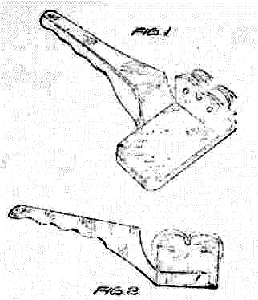
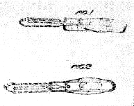
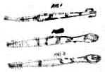
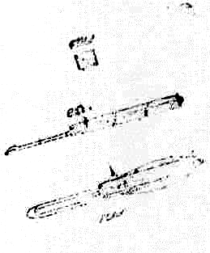
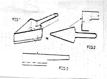
El cuerpo plástico del pelador que más vendemos es un diseño nuestro registrado en 1971. El del afila cuchillos, uno de 1969. Los dos siguen saliendo de la misma planta.
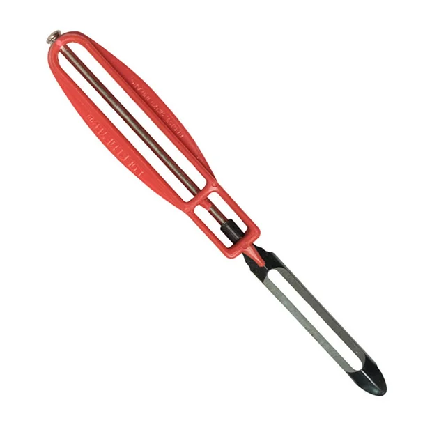
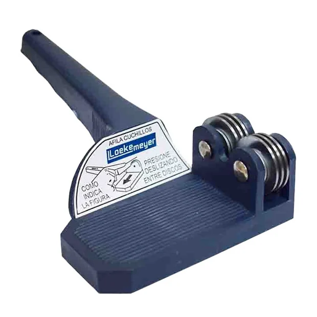
La columna "naturaleza" es la que figura en el registro. En un modelo industrial se protege la forma de una pieza, no el producto entero, y en los cinco casos esa pieza es la parte plástica: el cuerpo del afila cuchillos, el del pelador —inscripto como "empuñadura para útiles de cocina"—, la pala del corta torta y el pelanaranjas, que es plástico entero. Donde hay acero, la cuchilla o los discos van montados aparte: lo que se diseña y se registra es la matriz del plástico. Láminas originales depositadas en el Instituto Nacional de la Propiedad Industrial al registrar cada modelo. Fuente: INPI, búsqueda avanzada de modelos y diseños industriales, titular Loekemeyer.
Para tu comercio
Estampamos, armamos y embalamos en nuestra planta de Buenos Aires. La matricería es propia: las matrices de cada pieza las hacemos nosotros.
Nuestros productos tienen garantía de por vida por defectos de fabricación. No cubre el desgaste por el uso habitual.
Los artículos en contacto con alimentos que lo requieren se tramitan ante el INAL (ANMAT). Para exportar, emitimos certificados de origen a través de ADIMRA.
Producimos líneas con marca propia para cadenas de supermercados y distribuidores, con el mismo estándar que la línea Loekemeyer.
De dónde vienen
El abrelatas, el pelapapas y el sacacorchos resuelven problemas que parecen simples y tardaron más de un siglo en resolverse bien. Estas son sus historias, y cómo siguen hoy en nuestra línea.
La lata de conserva se patentó en 1810, y durante casi cincuenta años se abrió a martillo y cincel: las primeras traían impreso "ábrase con un cincel y un martillo alrededor del borde". Recién en 1858 Ezra Warner patentó en Estados Unidos el primer abrelatas, una hoja curva que se clavaba y se empujaba alrededor de la tapa. Era peligroso y lo usaban sobre todo almaceneros y el ejército.
En 1870 William Lyman cambió el enfoque: en vez de cortar empujando, hizo girar una rueda alrededor del borde con un punzón central como eje. Es la idea que usamos hasta hoy. En 1931 Charles Bunker sumó la rueda dentada y las manijas tipo pinza que muerden el borde de la lata: el abrelatas mariposa.
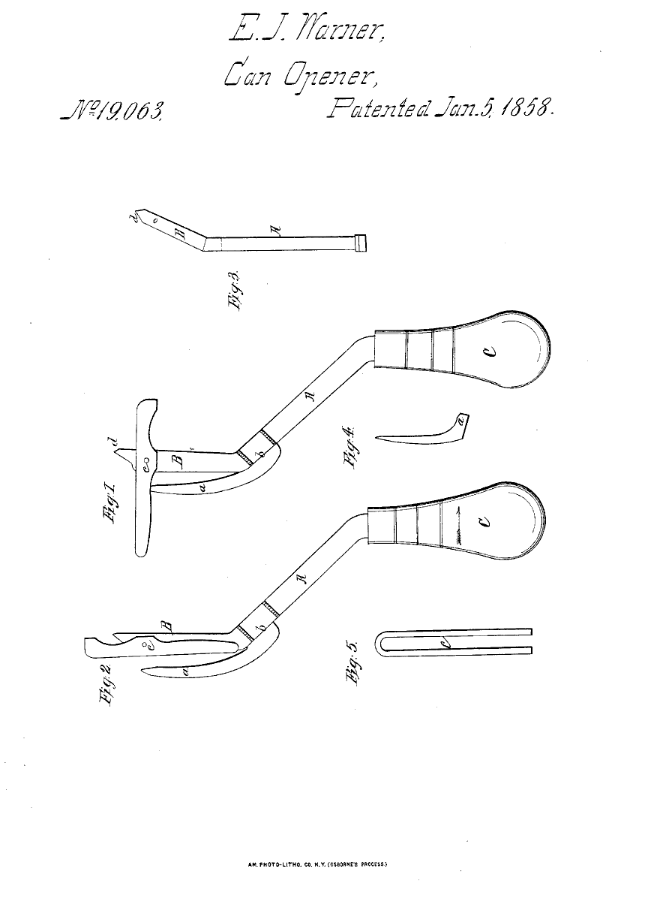
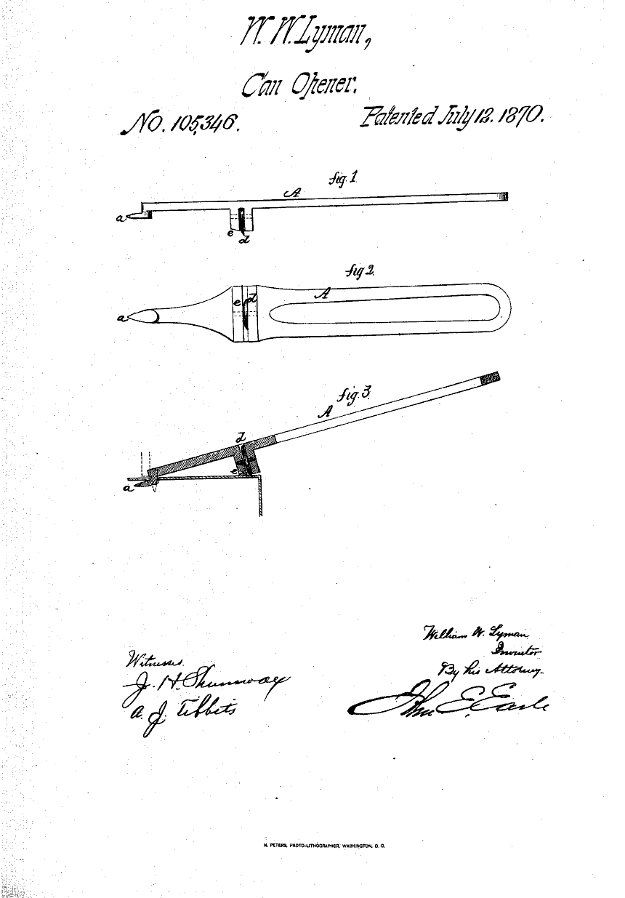
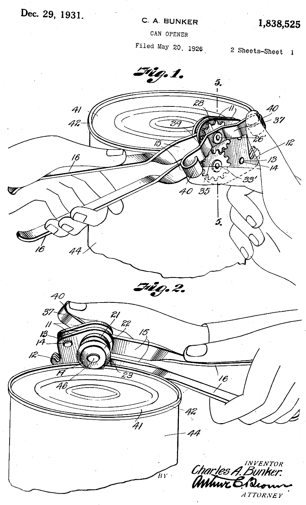
En Loekemeyer fabricamos abrelatas desde los primeros años de la empresa. En los abrelatas a manija antiguos todavía se lee, estampada en la hoja, la leyenda «Patente N° 129.035»: el número argentino con el que se fabricaba en los años 50. Hoy la línea tiene nueve modelos, entre ellos el de manija, el mariposa, el de uña, el de doble engranaje y el 3 en 1 con perforador y aflojatapas.
Hasta bien entrado el siglo XX las papas se pelaban con cuchillo, y el desperdicio dependía del pulso de cada uno. En los años veinte, en Thiers, la ciudad francesa de los cuchilleros, Victor Pouzet dio el primer paso con el pelador que llamó Économe, justamente porque sacaba una cáscara fina y ahorraba papa. En 1931, en el sótano de su casa en Zúrich, Alfred Neweczerzal empezó a fabricar utensilios de cocina con una perforadora que había comprado; en 1936 patentó un cortador de verduras que fue el antecesor de todo lo que vino después.
Su idea decisiva llegó en 1947, inspirada en el tiempo que había pasado pelando papas en el ejército: el pelador Rex, el primero con la cuchilla cruzada y basculante, hecho de una sola pieza de aluminio. La hoja que bascula sigue el contorno de la papa y saca una cáscara fina; el mango simétrico sirve igual para diestros y para zurdos. Quedó registrado ese mismo año con la protección internacional de modelo N° 11.002, y se vendieron decenas de millones sin cambiarle el diseño.
En la Argentina el primer pelapapas lo desarrollamos nosotros. De ahí salen los modelos N° 18.279 y N° 29.777 que registramos en el INPI en 1971 y 1976: el cuerpo plástico del pelador que todavía fabricamos.
Nuestra línea de peladores tiene nueve modelos, del clásico de mango plástico al de cuchilla de corte láser, e incluye el pelanaranjas, heredero directo del "dispositivo para pelar frutas" que la empresa registró en el INPI en 1975 con el modelo N° 27.925.
El primer sacacorchos no se diseñó para el vino: era el gusano de acero que los soldados enroscaban en la baqueta del fusil para sacar la bala o el taco atascado en el cañón. La primera mención escrita aparece en un tratado inglés sobre sidra de 1676, que describe "un tornillo de acero usado para extraer los tapones de las botellas".
En 1795 el inglés Samuel Henshall patentó el primero: le agregó un disco que frena la entrada del tornillo en el corcho y lo hace girar para despegarlo del vidrio. Casi un siglo después, en 1882, el alemán Carl Wienke inventó el de palanca que hoy llamamos tipo mozo y que sigue siendo el de los restaurantes. El de doble aleta llegó en 1930, cuando Dominick Rosati patentó en Chicago el mecanismo de cremallera y piñón: al enroscar, las dos alas suben solas, y al bajarlas el corcho sale sin fuerza.
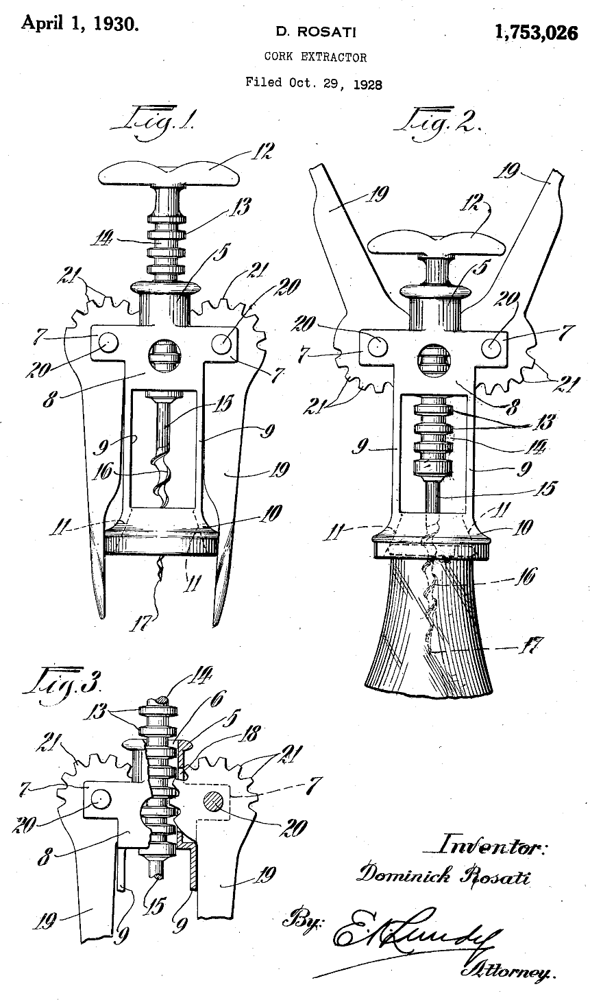
El primer sacacorchos de doble aleta fabricado en la Argentina también es nuestro: el mecanismo de Rosati, hecho acá.
Los tres mecanismos conviven en nuestra línea de quince sacacorchos: el tipo mozo de Wienke, el de doble aleta de Rosati y el combinado con destapador, en versiones cromadas, pintadas y de cabo de madera.
Atendemos supermercados, bazares, distribuidores y ferreterías de todo el país.